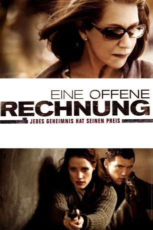

#4050 Eine Offene Rechnung
Alternativ: The Debt
 
 IMDB-Wertung: 6.9 / 10
IMDB-Wertung: 6.9 / 10  Metascore: 0
Metascore: 0 
The espionage thriller begins in 1997, as shocking news reaches retired Mossad secret agents Rachel (Helen Mirren) and Stefan (Tom Wilkinson) about their former colleague David (Ciarán Hinds). All three have been venerated for decades by their country because of the mission that they undertook back in 1965, when the trio (portrayed, respectively, by Jessica Chastain, Marton Csokas, and Sam Worthington) tracked down Nazi war criminal Vogel (Jesper Christensen) in East Berlin. At great risk, and at considerable personal cost, the team's mission was accomplished - or was it? The suspense builds in and across two different time periods, with startling action and surprising revelations.
Jahr: 2010
Dauer: 113 Minuten
FSK: 16
Land: USA Studio: Focus FeaturesTonspuren: DTS - ,
Untertitel: Deutsch, Englisch,
Auflösung: 1080p (1920x800) Größe: 6860 MB
Genre: Thriller, Drama
Regisseur: John Madden
Drehbuch: Jonathan Raymond
Soundtrack:
Darsteller:
 Helen Mirren als Rachel Singer, Tel Aviv 1997
Helen Mirren als Rachel Singer, Tel Aviv 1997 Tom Wilkinson als Stephan Gold, Tel Aviv 1997
Tom Wilkinson als Stephan Gold, Tel Aviv 1997 Ciarán Hinds als David Peretz, Tel Aviv 1997
Ciarán Hinds als David Peretz, Tel Aviv 1997- Romi Aboulafia als Sarah Gold, Tel Aviv 1997
 Jessica Chastain als Young Rachel, Berlin 1965
Jessica Chastain als Young Rachel, Berlin 1965 Marton Csokas als Young Stephan, Berlin 1965
Marton Csokas als Young Stephan, Berlin 1965 Sam Worthington als Young David, Berlin 1965
Sam Worthington als Young David, Berlin 1965 Jesper Christensen als Doktor Bernhardt / Dieter Vogel, Berlin 1965
Jesper Christensen als Doktor Bernhardt / Dieter Vogel, Berlin 1965 Brigitte Kren als Frau Bernhardt / Nurse, Berlin 1965
Brigitte Kren als Frau Bernhardt / Nurse, Berlin 1965- Alexander Jagsch als Border Guard, Berlin 1965
- Tomer Ben David als Sarah's Husband, Tel Aviv 1997
- Ohev Ben David als Sarah's Son, Tel Aviv 1997
- Jonathan Uziel als Mossad Agent, Tel Aviv 1997
- Elana Kivity Davenport als Publisher, Tel Aviv 1997
- Eli Zohar als Stephan's Driver, Tel Aviv 1997
- Irén Bordán als Seminar Moderator, Tel Aviv 1997
- Bálint Merán als Man on Tram, Berlin 1965
- Christian Strasser als Station Guard, Berlin 1965
- Alexander E. Fennon als Postal Worker, Berlin 1965
- István Betz als Train Driver, Berlin 1965
- András Szurdi als Soldier, Tel Aviv 1970
- Melinda Korcsog als Young Sarah, Tel Aviv 1970
- Nitzan Sharron als Party Guest, Tel Aviv 1970
- Adar Beck als Party Guest, Tel Aviv 1970
- Kátya Tompos als Newspaper Receptionist / Kátya, Ukraine 1997
- József Rácz als Kátya's Boyfriend, Ukraine 1997
- István Göz als Yuri Titov, Ukraine 1997
- Igor Vovk als Babenko Registrar, Ukraine 1997
- Morris Perry als Ivan Schevchuk, Ukraine 1997
- Erika Szórádi als Babenko Nurse, Ukraine 1997
Datei: X:\2010(N-Z)\Offene Rechnung, Eine (2010, FSK16, 1920x800).mkv seit 15.07.2016
Festplatte: HD 2010(G-Z)-2011(A-F)
 Es gibt insgesamt 115 Filme in der Gruppe '2010(N-Z)'
Es gibt insgesamt 115 Filme in der Gruppe '2010(N-Z)'